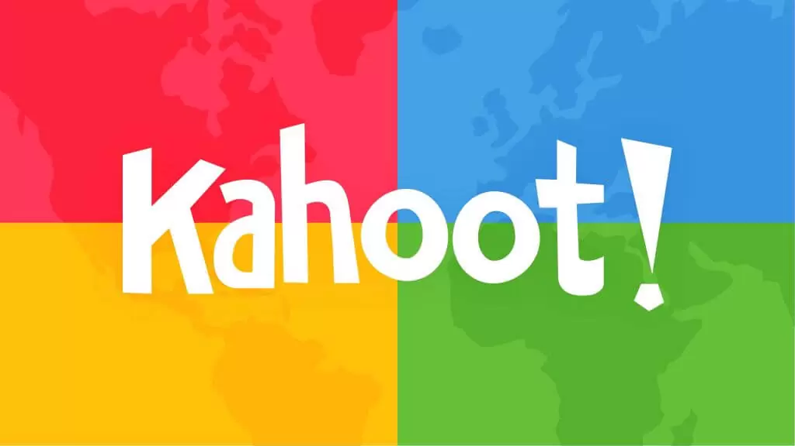
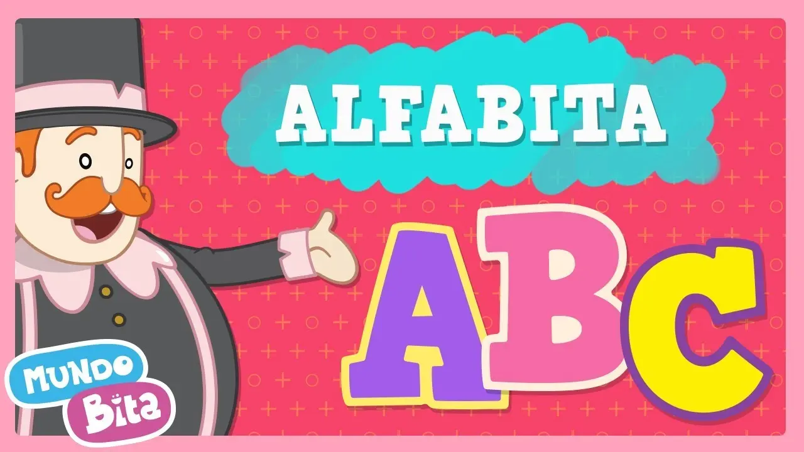
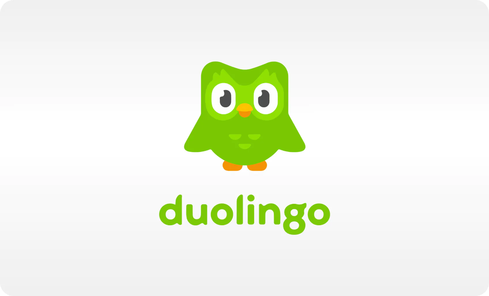
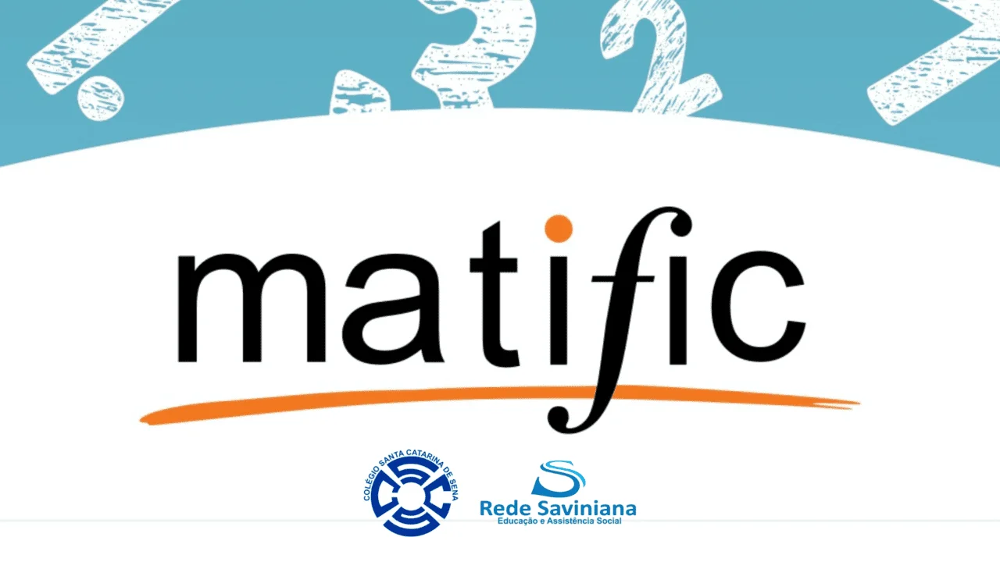

Os melhores jogos educativos para usar com crianças
No mundo atual, onde as telas fazem parte da rotina de crianças e adolescentes, encontrar formas criativas e eficazes de aprender é um grande desafio — e também uma oportunidade! Os jogos educativos surgem como aliados poderosos no processo de ensino, pois unem diversão com aprendizado de forma leve e envolvente. Esse metodo é chamado de Gamificação, e é um metodo poderoso quando se trata de tornar o aprendizado mais atraente e entendivel.
Neste artigo, vamos apresentar 5 jogos educativos que realmente ajudam no desenvolvimento escolar e cognitivo, e que podem ser usados tanto em casa quanto em sala de aula.
Kahoot! – Revisão divertida e colaborativa
O Kahoot! é uma plataforma interativa de quiz que permite criar e responder perguntas em tempo real. Ele é muito utilizado por professores para revisar conteúdos com os alunos de forma dinâmica.
O que torna a plataforma ainda mais interessante é a competitividade, pois dependendo da resposta e a velocidade com que ela é respondida, a pessoa ganha pontos, e esses pontos são acompanhados com um pódio. Além disso, você tem tanto a liberdade de criar seus jogos de forma fácil e prática como também usar os modelos já prontos do site!
Acesse o site Kahoot clicando aqui !
Minecraft Education Edition – Criatividade com propósito

O clássico Minecraft ganhou uma versão voltada à educação, onde os alunos podem explorar, construir e resolver problemas em ambientes educativos.
De todas, essa ferramenta é a mais complexa de usar, mas compensa quando se trata de ensinar e divertir, pois a ferramenta coloca você na pele do famoso jogo Minecraft. Porém, o seu objetivo é resolver os desafios focados em Ciências, Matemática, Ciências da Computação e até mesmo desenvolvimento de IA, tornando esse método de gamificação usado em muitas escolas e com resultados muito positivos.
Acesse o site Minecraft Education Edition clicando aqui !
ABC do Bita – Alfabetização para os pequenos
Para as crianças em fase de alfabetização, o ABC do Bita é um aplicativo repleto de cores, sons e personagens carismáticos. Ensina letras, sons, números e cores de forma lúdica.
Além de ser muito acessível, é prático e simples de usar, e torna a alfabetização muito mais lúdica e intuitiva para a criança que está aprendendo.
Acesse o site ABC do Bita clicando aqui !
Duolingo – Aprendizado de idiomas com diversão
O Duolingo transforma o aprendizado de línguas em uma jornada com desafios diários, personagens simpáticos e recompensas por progresso. Ótimo para introduzir novas línguas desde cedo!
Duolingo dispensa apresentações, pois é o aplicativo de educação de línguas com gamificação mais famoso do mundo, onde você pode aprender diversos idiomas de seu interesse de forma lúdica e divertida. Além disso, há os rankings, que te dão recompensas e conquistas conforme você avança na plataforma e melhora no seu desenvolvimento linguístico.
Acesse o site Duolingo clicando aqui !
Matific – Matemática acessível e interativa
O Matific oferece jogos e desafios baseados na BNCC para trabalhar conteúdos de matemática de forma acessível e divertida, com progressão adaptativa para cada aluno.
A Matific hoje é uma ferramenta muito utilizada pelas escolas públicas de São Paulo como uma ferramenta de Gamificação de matemática, e ela se mostra extremamente eficaz, pois é uma ferramenta lúdica, divertida e não dá a sensação de estar estudando enquanto aprende. Um ponto que é muito positivo na ferramenta é que os alunos ficam ansiosos para jogar e resolver os desafios da plataforma, aumentando o interesse na matemática. Essa definitivamente tem que ser uma ferramenta no seu repertório se você for professor de matemática ou quiser ensinar ao seu filho.
Acesse o site Matific clicando aqui !
Bônus: Atividades complementares no site AtividadeAdaptada.com.br

Além dos jogos digitais, aqui no nosso site você encontra atividades complementares, como quebra-cabeças, jogos dos 7 erros, sudoku e muitos outros recursos adaptados para todas as idades e perfis de aprendizagem.
Fique à vontade para navegar no site e baixar qualquer atividade que quiser de graça e sem restrições! São mais de 100 atividades para você aproveitar!
Escrito por: Jean Paulo Jampietri de Paiva Junior